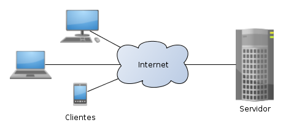

5. Modelos de red y principales protocolos
Las primeras redes que hicieron su aparición fueron aquellos que seguían un modelo centralizado. En este modelo, existía un ordenador central, potente, que se encarga de asumir las tareas de todo el conjunto. A él se conectaban estaciones terminales, con muy poca capacidad de procesamiento.
Este tipo de modelos centralizados tenían grandes inconvenientes. Si el ordenador central tenía algún tipo de avería, la red entera quedaba indisponible. La escalabilidad de este tipo de redes es costosa. También presentaban problemas de integración con otros sistemas.
Así, aparecieron los sistemas distribuidos en los que se hacía un trabajo colaborativo para realizar las tareas. Hay distintos modelos que se pueden tener en los sistemas distribuidos. De todos ellos, se prestará especial atención al modelo cliente / servidor.
SISTEMAS DISTRIBUIDOS
La mayoría de los sistemas informáticos que se tienen actualmente son sistemas distribuidos donde el procesamiento se distribuye sobre todos los elementos de la red en lugar de centralizarse en uno solo. Se hace un procesamiento cooperativo donde los componentes de la red realizan una tarea común mediante el paso de mensajes a través de la red, con los que se comunican y se coordinan. Internet es un buen ejemplo de sistema distribuido.
Son muchas las ventajas de los sistemas distribuidos frente a los centralizados. La compartición de recursos es algo intrínseco en estos sistemas. Suelen ser sistemas abiertos en los que no hay tanta dificultad a la hora de combinar hardware y software de distintos fabricantes. Otro aspecto importante es la buena escalabilidad o la tolerancia a los fallos, dado que al ser un sistema distribuido, si se le añade un nuevo elemento, disminuye de forma proporcional la carga en otros o al contrario, si un elemento de red deja de realizar tareas, estás se reparten entre el resto.
Los modelos de red más habituales:
- Arquitectura cliente / servidor. Los elementos de la red actúan como clientes o como servidores. Es decir, un servidor ofrece un servicios para atender a los clientes a través de las peticiones de servicio. Un servidor de un servicio puede ser a su vez cliente de un servicio diferente.

Modelo cliente servidor
Imagen de Wikimedia Commons (Autor: Tiago de Jesus Neves). Recuperado de https://commons.wikimedia.org/wiki/File:Cliente-Servidor.png. Licencia CC BY-SA 3.0 de Creative Commons.
{kind=link}
- Servicios proporcionados por múltiples servidores. En este modelo existen varios servidores. Estos pueden realizar la misma función, por tanto, sería un sistema con redundancia en el que si uno pasa a indisponible, los otros lo sustituyen. También es posible que el servicio se divida en partes y cada servidor realiza una.
- Servidores proxy y cachés. Una caché es un almacén de datos utilizados recientemente. Cuando un cliente solicita un dato, el servicio comprueba si el dato se encuentra en la caché para proporcionárselo al cliente o busca una copia actualizada, guardando el dato nuevo. La caché puede residir en el cliente o en un servidor proxy. De esta manera se optimiza el tráfico que sale o entra de la red ya que si un cliente demanda una página web, es posible que no sea necesario acceder al servidor web donde reside la página a través de Internet, ya que se encuentra en la caché.
Servidor proxy en una red local con conexión a Internet
Imagen de elaboración propia
- Procesos de igual a igual. En este modelo hay una serie de objetos que interaccionan entre sí. No es importante si los objetos ofrecen un servicio o hacen uso de él ya que hacen una actividad distribuida trabajando de una forma cooperativa para llevarla a cabo. En este tipo de sistemas, es necesario que existan unos procesos de sincronización que aseguren la consistencia de los recursos compartidos.
- Variaciones en el modelo clientes – servidor:
- Código móvil: este tipo de modelos puede implicar una amenaza de la seguridad de una computadora. Se puede englobar como una tipología de modelo cliente / servidor, donde un cliente inicia un diálogo con un servidor que implica la descarga de un código (applet) que reside en este y se ejecuta en el cliente de forma local.
- Agentes móviles. Este tipo de modelos también puede suponer una amenaza potencial de la seguridad. Un agente móvil es un programa en ejecución que se va trasladando a distintos ordenadores de una red para realizar alguna función, como puede ser la instalación y mantenimiento de software.
- Computadoras en red. En este tipo de modelos, se tiene una serie de ordenadores conectados en red. En el disco local hay un software mínimo, pero la mayor parte de las aplicaciones, e incluso es posible que también el sistema operativo, reside en un servidor donde se van descargando las aplicaciones a medida que el usuario las va demandando.
- Clientes ligeros. En este tipo de modelo de red, hay una serie de ordenadores que básicamente se encargan de implementar la interfaz. Realmente, las aplicaciones no se ejecutan de forma local, sino que esto se hace en un servidor remoto. Evidentemente, cuando la necesidad de intercambio de datos entre el servidor con el resto de ordenadores es elevada, este tipo de solución no es la más adecuada como es el caso de programas de diseño gráfico o de CAD.
Importante
La mayoría de los sistemas informáticos que se tienen actualmente son sistemas distribuidos donde el procesamiento se distribuye sobre todos los elementos de la red. Presentan ventajas frente a los centralizados (compartición de recursos, escalabilidad, tolerancia a fallos, etc.).
Los modelos de red más habituales:
- Arquitectura cliente - servidor: un servidor ofrece un servicios para atender a los clientes a través de las peticiones de servicio.
- Servicios proporcionados por múltiples servidores.
- Servidores proxy y cachés.
- Procesos de igual a igual. Los componentes de este modelo hacen una actividad distribuida trabajando de una forma cooperativa para llevarla a cabo.
- Variaciones en el modelo cliente - servidor: código móvil (applet), agentes móviles, computadores en red, clientes ligeros (solo implementan la interfaz gráfica y las aplicaciones se ejecutan en un servidor externo).